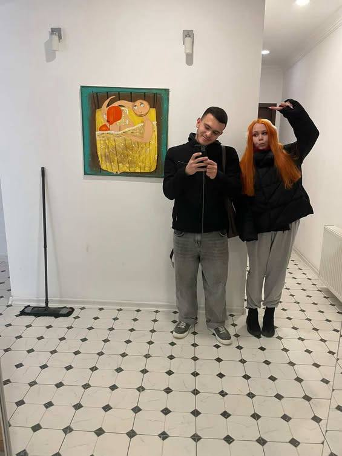
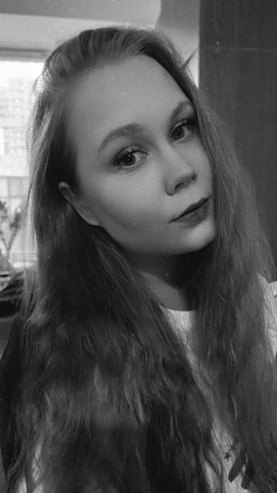

GEV'S PERSONAL LIFE
Gev and Vika


In the fall of 2025, Gev meets the love of his life, Vika. They met at university. They discovered they had a lot in common and started hanging out, but the main problem was that she was Russian. At first, his friend Hke thought they were just having fun together, with no strings attached. Then it turns out, just as Vle suspected, that Gev is serious about the relationship. After that, a lot of misunderstandings began; Hke and Vle started lecturing Gev, explaining that she wasn’t the kind of girl you could marry, especially after they found out she wasn’t a virgin. Gev didn’t want to listen to any of it. He even got into a fight with his parents, who were also against her. In the end, after many explanations and many xeroc from poor Hke and Vle, according to his own words, Gev finally realized on his own that she wasn’t the one he should spend his life with, that she was just for sex in Georgia. Fortunately, they no longer talk, but as people say, “Gev is a Gev,” and anything can happen.
